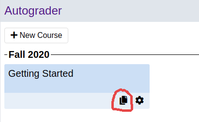

Setting Up Your Course¶
First-time course creation¶
Note for students: If you can’t find your course on the home page, please contact your instructor to be added to the roster.
If you are creating a course for the first time, contact your system administrator for assistance. Instructors at University of Michigan can contact help@autograder.io.
Copying a Course from a Previous Term¶
To copy a course from a previous term, click the “copy” icon for the course you want to clone.
Add Admin, Staff, and Student Users¶
Click the gear icon for your new course to enter the course admin page.

Next, hover over the “Roster” tab and click on one of the roles listed in the dropdown menu. The roles are as follows:
Admin: Admins have full edit permissions for the course. That includes changing user permissions, editing projects and test cases, etc. Admins can also look up students’ submissions with any feedback level. Admins also have the same privileges as staff users.
Staff: Staff can submit their own code unlimited times with maximum feedback. Staff can look up students’ submissions, but with restricted feedback as configured by admins.
Student: Students can view and submit to all published projects in the course. The can also form groups with other students (where allowed by the project settings).
Handgrader: Handgraders can access the handgrading interface for projects in the course and therefore grade students’ submissions according to a rubric configured by admins.
Any user with none of the roles listed above is considered a guest. Guests can only access projects that are configured to allow guests, and can only form groups with other guests.
To add users to the roster you selected, paste a newline-separated list of email addresses into the text box and click “Add to Roster”.